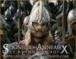

Forums galactiques > Assemblée Galactique : diplomatie officielle > Election d'un nouveau généralissime
Agarash 14/07 ETU 20:47 | je soutien totalement l'atlante , car je pense qu'il est a la hauteur et il remplacera parfaitement primarque durant son absence , Les membres de la fédération doivent etre reunis , et je pense que l'atlante possede la capacitée diplomatique , economique et militaire que primarque ne possede malheureusement pas ... voila mon avis , cordialement Agarash |
Snake14/07 ETU 23:28 | La Guilde reconnait officiellement le commandant L'Atlante en tant que nouveau généralissime de la fédération jusqu'au retour de son généralissime élu. J'espère que les liens qui ont été tissés avec le précédent généralissime continueront à grandir. Snake, Grand Représentissime Guildien |
OverLorD 15/07 ETU 05:00 | seulement des soupsons? haha il complote depuis le début par ci par la mangeant comme un mendiant a tout les rateliers , tu me dira il sen tire pas mal , mais question honneur il est a zéro , il a trop de poil de cul coincé entre les dents , si on voit ce ke je veut dire. |
Le Sigillite15/07 ETU 08:52 | Moi je n'ai rien contre Atlante de plus je ne le connais que par l'assemblée mais il y a une chose qui me chiffone... Vous vouliez réélire un autre généralisime... pas en nommer un... Il n'y a eu que quelques avis et voilà? Bon moi ce que j'en dis... Atlante, espèrons que vous serez juste et droit, que mes voeux vous accompagne. Bien à vous. Le Sigillite. |
dark 15/07 ETU 10:54 | Le generalissime Primarque est toujours a son poste mais il est parti en vacances! Le commandant L'Atlante le remplace durant l'absence du ct Primarque! C'est ce commandant qui a nommé lui meme L'Atlante! Et Primqrque reprendra son poste et un vote aura lieu a ce moment la! |
OverLorD15/07 ETU 14:34 | j'applaudis , obiwan a loupé son coup. |
Necrid 15/07 ETU 17:58 | Enfin c'est reculer pour mieux sauter... Je me méfie beaucoup de toutes ces tractations... |
Obiwan Kénobi 15/07 ETU 18:19 | Qui me fait un bisou? |
Necrid15/07 ETU 20:33 | Certainement pas moi... |
| Mithrandir  16/07 ETU 07:55 | je propose que aulieu d'un seul général il soit créé un conseil des commendement réélus très régulièrement pour commmender la fédération.comme ca tous ne serais pas géré par un seul homme mais par un conseil qui pourrai constester les propositions du prèsident et proposer la paix ou la guerre |
AlphonseHubert 16/07 ETU 11:09 | Et qui vous dit que la fédération a envie d'être commandée ? AlphonseHubert, libre |
Krarr16/07 ETU 12:24 | he he , bine posé mon cher Alphonse :) Cordialement , Commandant Krarr , qui a tjs ete libre de ses choix |
HK-48 16/07 ETU 12:26 | Et qui a besoin de trouver un Beschrelle avec un dico sinon AH va le couper en deux ^^ |
AlphonseHubert16/07 ETU 12:35 | Oh, tu sais, si je m'amusais à corriger les fautes d'orthographe de tout un chacun, je n'aurais plus le temps de gérer mes planètes... Mais quand même, faire, dans un message comme ça, une faute à BeschErelle, c'est pas mal ! Bravo ! |
HK-4816/07 ETU 12:37 | Très peu pour moi ^^ (rougit) T'as aussi eu la réputation d'être maniaque sur l'orthographe, c'est pas ma faute... |
Necrid16/07 ETU 16:48 | pas mal AH, pas mal... ;) |
L'Atlante 16/07 ETU 21:11 | En cette belle soirée, alors que l'assemblée semblait retrouver un nouveau souffle suite au discours de la ravissante "Muse suprême Bella". Le généralissime "L'Atlante" se leva et s'avanca lentement jusqu'au devant de la scène. Sur ces pas les commandants qui comme à leurs habitudes étaient en grande conversation, se tuerent. Un long silence envahit alors toute la salle. Le commandant "L'Atlante" prit alors la parole : "Mesdames et messieurs, membres de l'alliance, de la guilde et de la fédération, je me permet aujourd'hui de m'adresser à vous pour vous faire part de ma grande joie de voir que les choses bougent enfin. Notre galaxie n'a jamais connu une période de paix aussi longue, de nombreux projets visant à garantir un monde plus juste, plus égalitaire, plus sécuritaire sont proposés chaque jour. Nous devons continuer dans cette voix. En tant que remplaçant du commandant Primarque au poste de généralissime je vais donc tout d'abord vous présenter les lignes directrices que je suivrai pendant la période où je serai à ce poste. Premièrement je tiens à rappeler que je continuerai comme je le fais depuis un moment déjà, d'aider les jeunes commandants à leur développement mais également d'assurer leur sécurité afin qu'ils puissent se développer sereinement. Ceci devrait être fait par les prochains généralissime. Trop de jeunes commandants nous quittent car ils n'ont pu ou su se développer avant d'être rayé de la carte. Afin de garantir la pérénité de notre monde je m'engage donc dans cette voie et j'espère que les prochains généralissimes et les grands commandants feront de même. Deuxièmement je maintiens ma position concernant la collecte de l'impôt et la redistribution. L'impôt galactique est une bonne solution pour venir en aide aux jeunes commandants désireux de grandir. Il n'est certes pas parfait, mais c'est un grand pas en avant. Certaines améliorations pourront tout de même y être apportées par la suite. J'aimerai à présent vous présenter des projets qui me tiennent à coeur. La plupart ont déjà été présenté, mais je tenais à me prononcer sur ce sujet. Tout d'abord le principe de séparation des pouvoirs est une bonne chose. Lors de la préhistoire, nous avons eu la preuve à maintes reprises que cette solution était la meilleure. Le pouvoir serait donc séparé en trois institutions : Premièrement il y aurait un tribunal. Le tribunal serait constitué de trois membres, un membre élu par chaque faction. Cela se passerait comme l'élection du généralissime. Ils seraient responsables de traiter les sujets sérieux et pas les querelles de voisinage. Leur décision se ferait à l'unanimité afin que la justice soit respectée. Nous ne pouvons nous permettre de désigner "des jurés" pour chaque procès, ce serait trop long à mettre en place et ne serait pas forcément plus juste. Il va de soit que si un juge est impliqué dans une affaire il devra être remplacé. Si leur décision ne peut se régler à l'amiable, et nécessite l'utilisation de la force, la deuxième institution entre en jeu. Deuxièmement il y aurait un conseil de sécurité militaire. Ce conseil serait également constitué de trois membres, un membre élu par chaque faction. Le représentant de la fédération serait le généralissime. Il va de soit que le représentant devra être un commandant puissant afin de pouvoir agir en cas de problème. Le représentant de la fédération aura un poids important dans ce conseil ayant la possibilité d'utiliser des Kamikazes. Mais l'aide du représentant de la guilde, qui pourra l'aider à s'armer, et du représentant de l'alliance, qui pourra lui fournir les informations nécessaires pour agir, lui seront indispensables. De plus les membres de l'alliance et de la guilde pourront également l'appuyer gràce à leur flotte. Troisièmement les finances seraient contrôlées par trois commandants, en suivant le principe des deux précédents pouvoirs. Ces commandants seraient responsable de continuer la mise en place de l'impôt, en continuant leurs contrôles et la redistribution des fonds. La mise en place de ces institutions n'est pas très compliqué en soit. Elle nécessite seulement deux choses. Votre approbation et de réaliser trois élections." Le commandant "L'Atlante" s'arréta quelques instants pour reprendre son souffle.... Tout à coup il croisa le regard de "Muse suprême Bella", il lui adressa un sourire et reprit la parole : "Madame Muse suprême Bella, je suis ravi de voir que vous êtes revenues parmi nous. Je tenais à vous dire que j'ai été touché par votre discours de ce matin et que vous avez soulevé un point que je désire aborder aujourd'hui. La rédaction d'une constitution ! Ceci est une chose importante dans toute institution et elle est nécessaire aujourd'hui pour nous et pour les générations futures. Je soutiens donc votre projet. La question qui se pose alors est : Qui rédigera cette constitution ? Je pense qu'un seul commandant doit rédiger ce texte, car nous savons tous à quel point il est difficile de rédiger un même texte à plusieurs. Je propose pour cette tâche l'Archimage Antonophix. Ce commandant nous a prouvé à de nombreuses reprises, par la qualité de son discours, qu'il était l'homme idéal pour cette tâche. De plus il a la chance d'avoir comme épouse une Muse qui pourra lui donner une illumination divine afin de rédiger ce texte. Les commandants désireux d'aider à la rédaction de ce texte pourront bien entendu lui envoyer des MP afin de lui donner leurs idées. Une fois ce texte rédigé il nous sera proposé et nous devrons tous voter pour son application. Ce texte ne pourra donc pas être utilisé à des fins malhonêtes étant donné que nous pourrons dire non à son application." Lorsque le commandant "L'Atlante" se tut un silence glacial parcouru l'assemblée. Il était écouté par la plupart des commandants. On pouvait lire un certain scepticisme sur le visage de certains d'entre eux, mais même ceux là l'avaient écouté attentivement. Il prit une dernière fois la parole pour conclure : "Je vous remercie tous de m'avoir écouté attentivement. J'espère qu'ensemble nous pourrons faire avancer les choses." Le généralissime retourna alors lentement à sa place. L'assemblée n'avait jamais été aussi calme. Mais pour une fois ce calme n'était pas du à l'absence de personne, ni à la sieste de ceux qui étaient présents, mais à une pèriode de réflèxion que chacun s'accordait. Cordialement. Généralissime L'Atlante |
karctak 16/07 ETU 22:12 | Le representissime supléant de l'Archimage Antonophix se levba alors. Il avait le sourir d'un homme satisfait , d'un homme heureux qui entend une douce mélodie ou une exelente nouvelle en l'ocurence . Il s'exprima alors : " Chèr commandant "L'Atlante" , je suis plus que ravis de voir que le généralissime aprouve se projet si ambitieux car , même si certains sont suspicieux ou voir même , disent que se projet est irréalisable , il l'est ! Et il sera réalisé avec l'aide de vous tous chèr commandants et commandantes. Car même si tout le monde ne s'entend pas a merveille et même si certain se deteste ,la paix de notre galaxie vos plus que chacun de nous , je dirai même qu'elle est nous tous réuni. Nous ne sommes pas la seul galaxie dans le monde. Il y en a telement d'autre. Il nous faut nous unir si un jour nous rencontrons une antité inconnu , pour lui montrer que notre civilisation a été sufisament cohérente pour créer une relation pascifiste entre chacun de ses membres. Je dirai également qu'un civilisation uni impose le respect alors qu'un civilisation barbare et ou les conflit règne en permanence ne provoque que le dégout et la peur... Nous avons l'occasion tous ensemble d'améliorer les choses. Ne la gachons pas. L'Atlante nous a exposé des proposition très interessente et nous pouvons faire confiance a un généralissime pour son honneteté. La Muse nous inspire tous a un moment ou un autre. Elle m'a inspiré aujourd'hui tout comme notre généralissime. Ecoutez la petite voix au fond de vous. Elle vous dira quelle est le chemin que vous devez suivre." Sur ces paroles le Representissime supléant se rassi et l'on pouvais lir sur son visage une certaine satisfaction d'avoir réussi , tout comme le Généralissime , a capter l'attention de la plupart des commandants présent dans l'assemblé. |
Stungrinn16/07 ETU 23:32 | L'empereur Stungrinn fut choqué en entendant ses paroles a l'assemblée. Il fut également surpris de voir un alliantiste soutenir un tel projet, trop militariste pour Stungrinn: "Chèrs commandants je ne puis vous écouté dire de tel chose sans réagir, car votre projet n'a pas un abouti démocratique mais plutot un abouti militariste. Je m'explique, mais avant je ferais une critique constructive en commencant par le début. Vous pronnez la séparation des pouvoirs, pricipe que je soutient et je ne le critiquerait pas, or vous ne séparer que la justice, pouvoir judiciaire, l'assemblée militaire, l'on va suposé que c'est le pouvoir éxécutif, mais nous y reviendrons. Et pour finir les finances, je ne crois pas que ce soit le pouvoir législatif. mais alors où est-il ? Et bien il n'y en a pas ce sera la première critique. Passons maintenent a la sivante, le pouvoir éxécutif et un pouvoir qui éxécute, non seulement les décitions juridique, mais aussi les désitions législatif, d'ailleur le pouvoir éxécutif va de paire avec le pouvoir législatif l'un ne va pas sans l'autre. Donc votre conseil militaire se voit assimilée au pouvoir judiciaire. je ne pense passe que la galaxie soit un grand tribunal ou l'on débat également de l'économie. De plus je suis contre le faite qu'il n'y ai pas de juré votre tribunale est un tribunal militaire. les jurée sont la pour la neutralité et il faut des argument convainquant avec des preuves a l'appuie pour une impartialité et une neutralité totale. Si vous avait peur de la coruption je vous répondrais que c'est un manque de confiance, et sans la confience nous n'avancerons pas. Mais passons encore a autre chose. cette critique s'adresse également a vous commandant Karctak. Je ne pense pas que la paix peu être instoré par la répréssion des armes. Bien que certain pourrons dire qu'il faut conbattre le feu par le feu la guerre par la guerre. Mais de ce faite le feu ne disparaitra pas et de ce fait la guerre non plus. Pour la paix il faut avant tout de la confiance car comme je l'ai dit plus tot sans la confiance en son prochain l'on avence pas, or la répréssion éxclue toute confience et éxclut de la même occation la paix. Pour soutenir ces argument, je reprendrai une pharse que vous avez prononcé et qui me marqua: "Je dirai également qu'un civilisation uni impose le respect alors qu'un civilisation barbare et ou les conflit règne en permanence ne provoque que le dégout et la peur..." Vous êtes dans le vrai or la prépréssion va avec la peur et le dégout, alors que la confience va de paire avec l'unité. Vous dites qu'il faut améliorer les chose alors ne sombrons pas dans la barbarie de la répréssion. De plus j'ai toujours soutenue qu'un seul commendant ne pourait crée de zéro une constitution viable car celle-ci doit montré la diréction que notre galaxie doit prendre, la moidre erreur conduirait une société se dégradant. De plsu un seule homme peut avoir de bonne idées mais deux homme peuvent avoir deux fois plus de bonnes idées, comme le dit le dictons l'unions fait la force. Et pour détrerminé cette unions il faut une assemblée unis pour rédigé cette constitution. Voila même si ce débat est ici pour la création d'une cour de justice je ne pouvait que réagir ici devant tous pour dire halte aux armes. Maintenent si vous me reproché que mon texte n'ai fait que de dénigration et qu'il ne propose rien, je vous répondrait que les idées sont au rendez-vous mais je ne suis pas au bonne endroit pour les éxposés. Je vous remercie out pour votre attention et j'espère que je ne suis pas le seule a pensé insi ou bien que mon discour vous a éclairé." L'empereur Stungrinn en avait finit et il s'assit. Il avait gardé cet air choqué que ces discour militariste et a son gout un peu totalitaire, car il faut tout de même que la démocratie ne passé que par le vote. |
karctak17/07 ETU 00:29 | Le representissime Karctak se relava l'aire déçu que ses paroles soit mal interpresté: " Chèr Stungrinn j'ai du mal m'exprimer je soutien entièrement le projet de Muse Suprême Bella je n'ai pas dis se qui me plaisai dans celui de L'Atlante . Il est vrai que j'ai été trop hatif en repondant aussi tot avoir écouté . Je vous pris de bien vouloir me pardonné cet entrain . Je ne suis en aucun cas pour que le généralissime attaque dès qu'il y a un problème en tant que representissime et surtout en temps qu'alliantiste je suis d'abord pour la diplomatie et en aucun cas pour un conflit armé direct mais il ne semble pas non plus que sa soit l'intention du généralissime. Je suis également navré de devoir avouer que je pense que très peu de conflit peuvent se regler a l'amiable de façon équitable. Et je pense également qu'il y a trop de commandant malhonnete qui ne mérite pas les consesions que font les plus fairplay. C'est pourquoi il faut parfois agir avec dureté mais bien entendu uniquement si la situation l'impose. Encore une foi les descision arbitraire sont exclus vu les disposition qui devrai etre mis en place en même temps que le reste. Je vous pris encore de croir que je ne suis pas pour la guerre , malheureusement elle est parfois inévitable et l'histoire nous l'a montré a plusieur reprise. Certains commandants ne respect que la lois du plus fort et pour les faire rentré dans l'ordre et faire perdurer la paix il faut leur montrer qu'il ne sont pas les plus forts. Voila mon point de vu qi vous pensez que j'ai tort prouvez le moi et je serai suffisament humble pour avouer mes erreurs soyez en sur, se n'est pas pour rien que l'Archimage m'a fait confience pour etre son supléant..." Karctak se rassi la mine triste ... |
Forums galactiques > Assemblée Galactique : diplomatie officielle > Election d'un nouveau généralissime